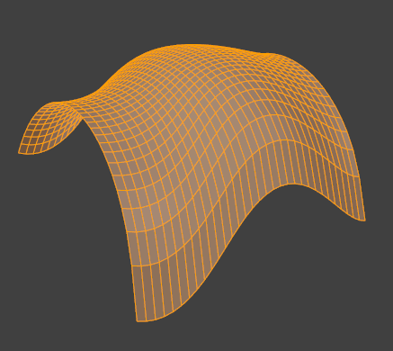

Інструменти Граней -- Face Tools¶
Орієнтир -- Reference
| Mode: | Edit Mode |
|---|---|
| Menu: | |
| Hotkey: | Ctrl-F |
Це інструменти, які маніпулюють гранями.
Зробити Ребро/Грань -- Make Edge/Face¶
Орієнтир -- Reference
| Mode: | Edit Mode |
|---|---|
| Menu: | |
| Hotkey: | F |
Це створить ребро або деякі грані, залежно від вашого виділення. Дивіться також тут -- Creating Geometry.

Замкнутий периметр ребер. |

Заповнено за допомогою Fill. |
Заповнення -- Fill¶
Орієнтир -- Reference
| Mode: | Edit Mode |
|---|---|
| Menu: | |
| Hotkey: | Alt-F |
Опція Fill створюватиме трикутні грані з будь-якої групи виділених ребер або вершин, допоки вони формують один чи кілька завершених периметрів.
- Beauty
- Arrange the new triangles nicely.
{kind=link}
Заповнено за допомогою Fill.
Зауважте, на відміну від створення N-бічників, Fill підтримує отвори.

Закритий периметр ребер з отворами. |

Заповнено за допомогою Fill. |
Beautify Faces¶
Орієнтир -- Reference
| Mode: | Edit Mode |
|---|---|
| Menu: | |
| Hotkey: | Shift-Alt-F |
Beautify Faces works only on selected existing faces. It rearrange selected triangles to obtain more "balanced" ones (i.e. less long thin triangles).
- Макс Кут -- Max Angle
- Опція розмежування кута для лімітування обертання ребер до плоских поверхонь.

Текст, конвертований у сіть. |

Result of Beautify Faces. |
Заповнити Ґраткою -- Grid Fill¶
Орієнтир -- Reference
| Mode: | Edit Mode |
|---|---|
| Menu: |
Grid Fill uses a pair of connected edge loops or a single, closed edge loop to fill in a grid that follows the surrounding geometry.
The best predictable result can be achieved if you select two opposite edge loops with an equal number of vertices. When a single, closed edge loop is selected, the Span/Offset options allows you to adjust the way two opposite edge loops are detected from one closed edge loop.
- Відтинок -- Span
- Specifies the number of columns in the grid.
- Зсув -- Offset
- Defines the vertex that is considered to be the corner of the grid, by default, it's the active vertex. The Offset allows you to rotate the grid lines.
- Просте Змішування -- Simple Blending
- Use a simple interpolation algorithm to generate grid vertices from boundary loops, which doesn't attempt to maintain the shape, useful for flat surfaces or times when keeping the shape gives odd results.

Увід. |

Grid Fill result. |
{kind=link}
Потовщення -- Solidify¶
Орієнтир -- Reference
| Mode: | Edit Mode |
|---|---|
| Menu: |
Це бере виділення граней та потовщує їх, видавлюючи їх неоднорідно для надання об'єму не-розгортній -- non-manifold поверхні Це також доступне у формі окремого модифікатора -- Modifier. Після використання цього інструмента ви можете задати відстань зсуву на панелі Оператора.
- Товщина -- Thickness
- Величина зсуву ново створеної поверхні. Додатні значення зсувають цю поверхню всередину відносно до напрямку нормалей. Від'ємні значення зсувають назовні.

Сіть перед операцією Solidify. |

Потовщення з додатною Thickness. |

Потовщення з від'ємною Thickness. |
Перетин -- Intersect¶
Перетин (Ніж) -- Intersect (Knife)¶
Орієнтир -- Reference
| Mode: | Edit Mode |
|---|---|
| Menu: |
Цей засіб Перетину дозволяє вам різати перетини у геометрії. Це трохи схоже на інструмент «Булів», але не розраховує зовнішню/внутрішню сторони. Грані розділяються уздовж цих перетинів, залишаючи нові ребра виділеними.
- Джерело -- Source
- Виділене -- Selected / Невиділене -- Unselected
- Оперує виділеною або невиділеною геометрією.
- Самоперетин -- Self Intersect
- Обробляє перекривну геометрію сіті.
- Режим Розділяння -- Separate Mode
- All -- Усе
- Розділяє геометрію по новому ребру.
- Розріз -- Cut
- Утримує кожну сторону перетину окремою без розділяння граней навпіл.
- Об'єднання -- Merge
- Об'єднує усю геометрію від перетину.
- Поріг Об'єднання -- Merge Threshold
- Дивіться Intersect (Boolean).
Перетин (Булів) -- Intersect (Boolean)¶
Орієнтир -- Reference
| Mode: | Edit Mode |
|---|---|
| Menu: |
Performs boolean operations with the selection on the unselected geometry. While the Модифікатор «Булів» -- Boolean Modifier is useful for non-destructive edits, access to booleans with a tool in Edit Mode can be useful to quickly perform edits.
- Булів -- Boolean
- Різниця -- Difference, Об'єднання -- Union, Перетин -- Intersect
- Обмін -- Swap
- Змінює порядок операції.
- Поріг Об'єднання -- Merge Threshold
Допуск для закритих граней, щоб вони вважалися дотичними. Може бути корисно його збільшити, коли деякі самоперетини не виявляються, а повинні би були, та коли створюється додаткова геометрія через те, що не виявляється перекривання ребер.
Cảnh báo
Поріг, що наближається до розміру граней, може призводити до дуже повільного розрахування, тому у цілому утримуйте це значення невеликим.
Каркас -- Wireframe¶
Орієнтир -- Reference
| Mode: | Edit Mode |
|---|---|
| Menu: |
Інструмент Wireframe робить каркас із граней, перетворюючи ребра у трубки каркасу, подібно до Модифікатор «Каркас» -- Wireframe Modifier.
Випин Граней -- Poke Faces¶
Орієнтир -- Reference
| Mode: | Edit Mode |
|---|---|
| Menu: | |
| Hotkey: | Alt-P |
Splits each selected faces into a triangle fan, create a new center vertex and create triangles between original face edges and new center vertex. The Offset can be used to make spikes or depressions.
- Зсув Випину -- Poke Offset
- Offset the new center vertex along the face normal.
- Зсув Відносно -- Offset Relative
- Multiply the Offset by the average length from the center to the face vertices.
- Центр Випину -- Poke Center
Computes the center of a face.
- Weighted Mean
- Using the mean average weighted by edge length.
- Mean
- Using the mean average.
- Bounds
- Uses center of bounding box.
Трикутникувати Грані -- Triangulate Faces¶
Орієнтир -- Reference
| Mode: | Edit Mode |
|---|---|
| Menu: | |
| Hotkey: | Ctrl-T |
This tool converts each selected faces (whether it be quads or n-gons) to triangular faces. See the Модифікатор «Трикутникування» -- Triangulate Modifier.
Трикутники у Чотирикутники -- Triangles to Quads¶
Орієнтир -- Reference
| Mode: | Edit Mode |
|---|---|
| Menu: | |
| Hotkey: | Alt-J |
Цей засіб конвертує виділені трикутні грані у чотирикутні, беручи суміжні трикутники та вилучаючи спільне ребро для створення чотирибічника на основі порогу. Цей інструмент може застосовуватися на виділенні з одночасно кількох трикутників.
Це означає, що ви можете виділити сіть повністю та конвертувати трикутники, що вже формують чотирибічні форми, у чотирибічники без потреби займатися окремими гранями.
Альтернативно ви можете змушувати цю операцію вибирати пари граней (дивіться пораду нижче про інші способи сполучення).
Для створення чотирибічної грані цей інструмент потребує виділення принаймні двох суміжних трикутних граней. Якщо ви маєте парну кількість виділених трикутників, то можна також отримувати не тільки чотирибічники. Фактично, цей засіб намагається створити «квадратичні» чотирибічники, наскільки це можливо, із даних трибічних граней, а це означає, що деякі з трикутників після нього можуть і залишатися.

Після конвертування трибічників у чотирибічники. |
{kind=link}
All the menu entries and hotkeys use the settings defined in the Operator panel:
- Макс Кут -- Max Angle
- Це значення, між (0 до 180), керує порогом для цього засобу для роботи на суміжних трикутниках. З Threshold 0.0 він буде сполучати тільки суміжні трикутники, що формують ідеальний прямокутник (тобто, прямокутні трикутники, що сполучаються своїми гіпотенузами). Більші значення вимагаються для трикутників зі спільним ребром, що є невеликим, відносно розміру інших ребер цих трикутників.
- Порівняти UV-ти -- Compare UVs
- При увімкненні це запобігає об'єднанню трикутників, що не є суміжними також в активній карті UV.
- Порівняти Колір Вершин -- Compare Vertex Color
- При увімкненні це запобігає об'єднанню трикутників, що не мають однакових кольорів вершин.
- Порівняти Гостроту -- Compare Sharp
- При увімкненні це запобігає об'єднанню трикутників, що мають спільне ребро, позначене як гостре -- Sharp.
- Порівняти Матеріали -- Compare Materials
- При увімкненні це запобігає об'єднанню трикутників, що не мають однакового призначеного на них матеріалу.
Gợi ý
При виділенні ізольованих груп граней ці опції можуть комбінуватися з засобами Create Face або Розчинити Грані -- Dissolve Faces, це не лімітується чотирибічниками.
Звести Ребра у Грані -- Weld Edges into Faces¶
Орієнтир -- Reference
| Mode: | Edit Mode |
|---|---|
| Menu: |
Засіб для розділення виділених граней незв'язаними вільними ребрами. Це може бути корисно подібно до інструмента Knife, але такі ребра спершу укладаються вручну.
Обернути Ребро -- Rotate Edges¶
Орієнтир -- Reference
| Mode: | Edit Mode |
|---|---|
| Menu: |
This tool functions the same edge rotation in edge mode. It works on the shared edge between two faces and rotates that edge if the edge was selected.

Two adjacent faces selected. |

Selected edge rotated. |
Дивіться детальніше тут -- Rotate Edge.
Оберт і Розворот -- Rotate & Reverse¶
- Обернути/Розвернути UV -- Rotate/Reverse UVs
- Дивіться тут -- Face Mirror and Rotate UVs.
- Обернути Кольори -- Rotate Colors
- Rotates the Vertex Colors inside faces either clockwise or counterclockwise.
- Розвернути Кольори -- Reverse Colors
- Flips the direction of Vertex Colors inside the selected faces.
Нормалі -- Normals¶
Дивіться детальніше тут -- Editing Normals.